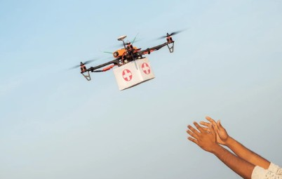
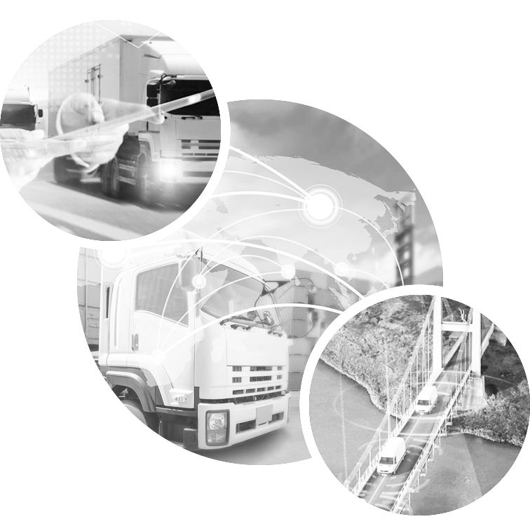
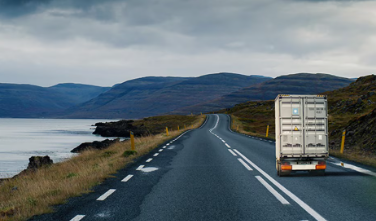

LOGÍSTICA
Promovemos el transporte inteligente, una logística eficiente, oportuna y sostenible, enfocándonos en la conducción eficiente, la optimización de rutas, un mantenimiento activo de los vehículos e incorporando de forma continua vehículos propulsados por energías alternativas con el fin de minimizar nuestra huella de carbono.
Información
TRANSPORTE
Promovemos el transporte inteligente y sostenible, enfocándonos en la conducción eficiente, la optimización de rutas, un mantenimiento activo de los vehículos e incorporando de forma continua vehículos propulsados por energías alternativas con el fin de minimizar nuestra huella de carbono.
Independientemente de tu sector, producto básico o mercados clave, EsMoQuin Trade tiene soluciones que ofrecen tanto a pequeñas como grandes empresas la oportunidad de crecer. Ofrecemos a nuestros clientes salidas frecuentes en las principales rutas comerciales y servicios interiores para una verdadera experiencia de extremo a extremo.
Sostenibilidad
Sostenibilidad
| Emisiones de gases de efecto invernadero |
Tecnología Verde |
Última milla y transporte ecológico |
| Emisiones de gases de efecto invernadero |
Reducción de nuestras
emisiones de gases de
efecto invernadero a
menos de 29 millones de
toneladas |
Electrificar el 60% de los vehículos de entrega de última milla y aumentar
la proporción de combustibles sostenibles en el transporte de mercancías a más
del 30% para 2030. |

SERVICIO DE TRANSPORTE
Independientemente de tu sector, producto básico o mercados clave, EsMoQuin Trade tiene soluciones que ofrecen tanto a pequeñas como grandes empresas la oportunidad de crecer. Ofrecemos a nuestros clientes salidas frecuentes en las principales rutas comerciales y servicios interiores para una verdadera experiencia de extremo a extremo.

ALMACENAMIENTO PRINCIPAL
Centros de consolidación
Un almacén perfectamente situado y conectado a sus áreas de aprovisionamiento puede combinar materiales y mercancías de preexportación, ayudándole a optimizar sus movimientos terrestres y las cargas de los contenedores.
Nuestra cartera de productos incluye almacenes con y sin depósitos aduaneros, instalaciones situadas dentro de zonas de libre comercio y otras cercanas o dentro de los puertos para facilitar la transferencia al barco.
Ofrecemos consolidación nacional y regional/internacional, incluida la consolidación multinacional. .